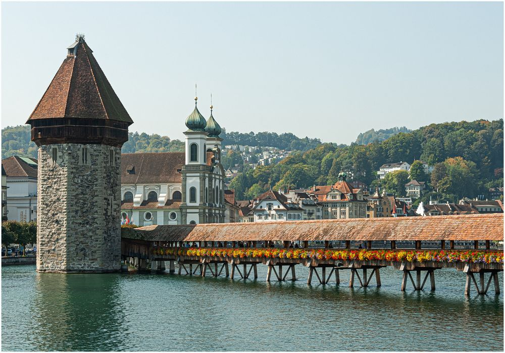
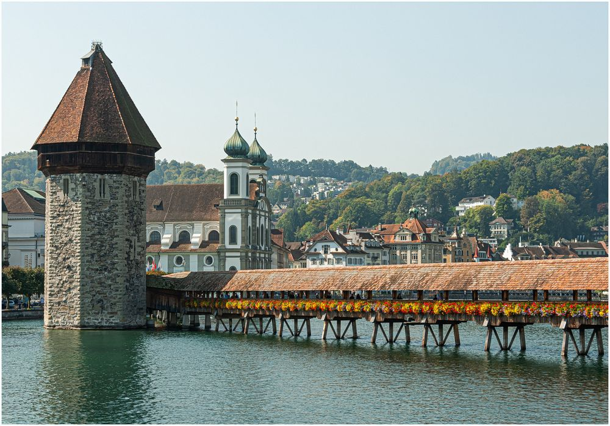
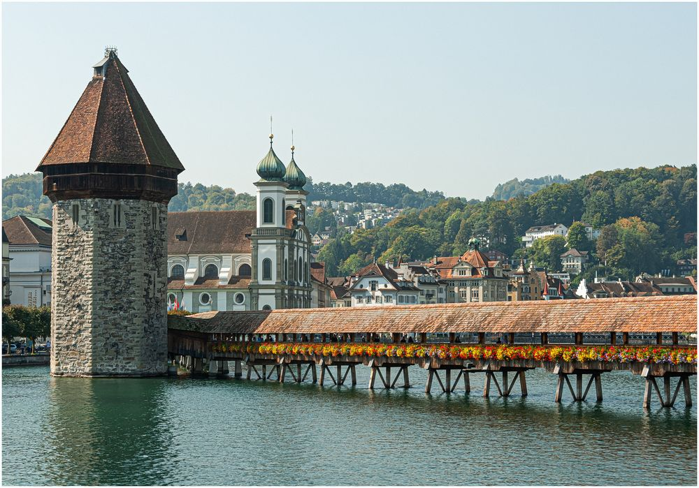

April 14, 1994
 


April 14, 1994
204,7m (672 ft)
None
Europe
Switzerland
The Alcántara Bridge has suffered more damage from war than from the elements over the years. The Moors destroyed one of the smallest arches in 1214 although this was rebuilt centuries later, in 1543, with stone taken from the original quarries. The second arch on the northwest side was then later destroyed in 1760 by the Spanish to stop the Portuguese advancing and was repaired in 1762 by Charles III, only to be blown up again in 1809 by Wellington's forces attempting to stop the French. Temporary repairs were made in 1819, but much of the bridge was destroyed yet again in 1836 by the Carlists. The bridge was rebuilt in 1860 using mortared masonry. And following completion of the José María de Oriol Dam, which allowed for the draining of the Tagus riverbed, the main pillars were completely repaired in 1969.
